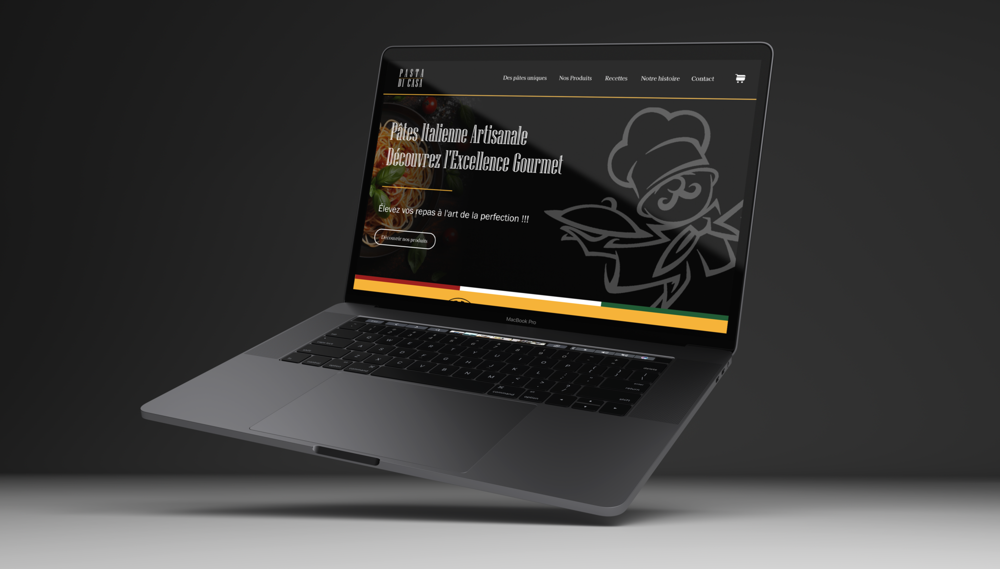

Pasta di Casa est une marque fictive de pâtes artisanales créée dans le cadre d’un projet scolaire. De l’identité visuelle au site vitrine développé sous WordPress, ce projet mêle design, packaging et expérience utilisateur optimisée.
Dans le cadre d’un projet scolaire, l’objectif était de créer une marque fictive de A à Z, en développant à la fois son univers graphique, son identité visuelle et sa présence digitale. Le projet Pasta di Casa a été imaginé comme une marque de pâtes artisanales italiennes, alliant tradition et élégance. L’ensemble du travail a couvert la création du branding, de supports print (packaging, affiches, fiches produit), du site vitrine, ainsi que de tous les outils graphiques nécessaires à une communication cohérente et professionnelle.

Le design global de la marque a été réalisé à l’aide de la suite Adobe (Photoshop, Illustrator, InDesign), avec une direction artistique sobre, élégante et inspirée de l’univers gourmet italien. Une charte graphique complète a été mise en place, incluant typographies, palette de couleurs, icônes et styles d’illustration. Les maquettes du site web ont été réalisées sur Figma, en respectant l’identité visuelle développée, avec une attention portée à l’harmonie, à l’ergonomie et à la clarté du parcours utilisateur.
Le site vitrine de Pasta di Casa a été développé sous WordPress, en adaptant le thème pour coller parfaitement aux maquettes créées sur Figma. L’objectif était de proposer une interface fluide, responsive, et fidèle à l’univers graphique défini. Le site permet de présenter la marque, ses produits, ainsi que ses valeurs, tout en mettant en avant le packaging et les visuels créés durant le projet.
Figma, suite Adobe (Photoshop, illustrator, InDesign), WordPress